A picture guide for the Head Usher. Each page shows one thing you can do, with the exact button to tap.
Take it one page at a time. Nothing here needs to be learned in one go, and nothing you tap can break the app. If you are ever unsure, ask Asim and he will go through it with you.
The Ushers App. Every usher has this. Your duties and reports to check are here.
Green screens
The Admin App. Only you and the Assistant Head Usher have this. It is where you run the department.
Orange rings
Show you where to tap. They are only in this guide, not in the real app.
Getting started
You only do these once.
1Getting started
Put the app on your phone
Open this address on your phone:
drolnstone.github.io/ushers
The page that opens shows the steps for an iPhone and for an Android phone. Follow the ones for your phone. Afterwards, Ushers sits on your phone like any other app.
Tip: Asim can do this part with you in two minutes.
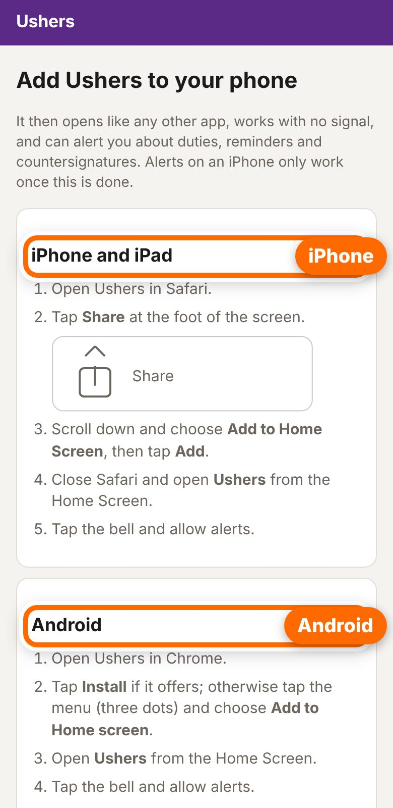
2Getting started
Sign in
Choose your name from the list.
Type your 4-number PIN.
That is all. The app signs you in by itself after the fourth number.
Keep your PIN to yourself. It is also your signature when you sign or approve something.
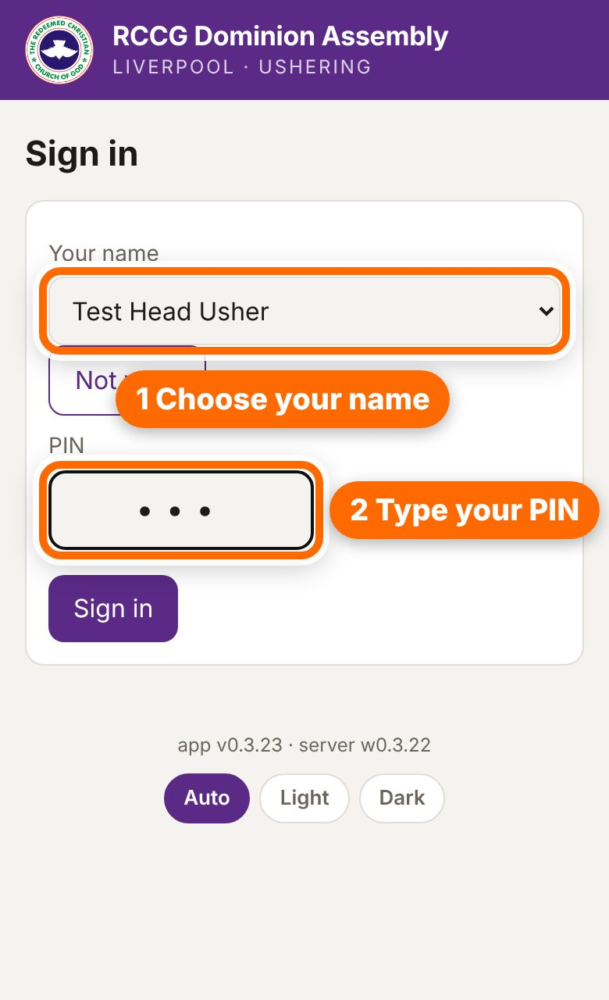
3Getting started
The first time: your PIN
The very first time you sign in, the app asks if you want to keep the PIN you were given.
Tap Yes, keep it to carry on, or
Tap No, change it to choose your own four numbers.
Tip: pick four numbers you will remember, but not your birthday.
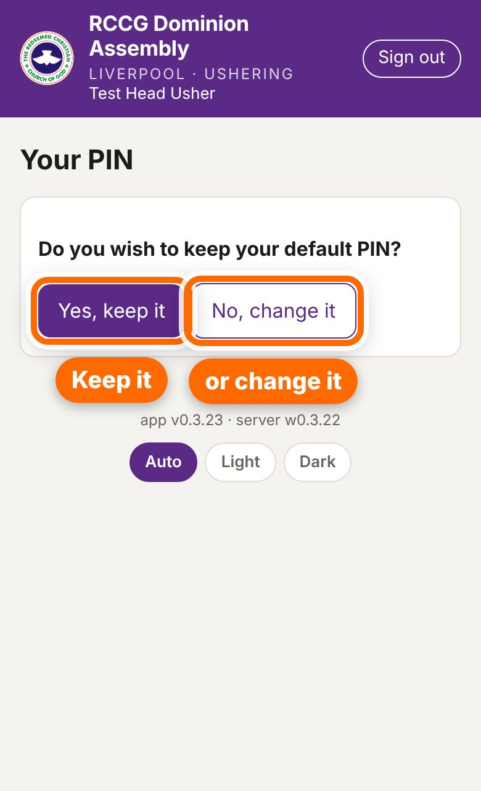
4Getting started
Your home page
Home answers one question: What am I doing?
Anything waiting for you is at the top. Below it are your duties for this week and the weeks ahead.
Tip: tap Home at any time to come back here.
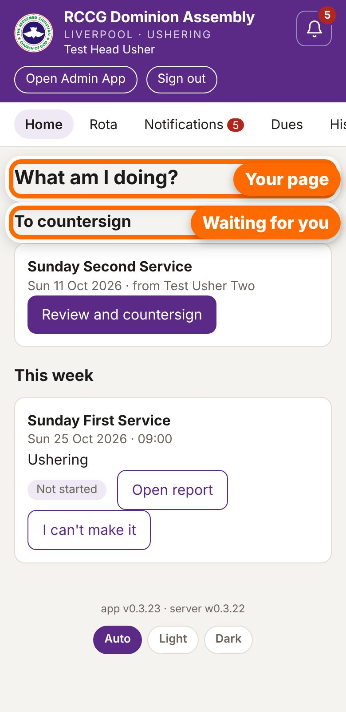
5Getting started
Turn on alerts
Tap the bell at the top.
When your phone asks, tap Allow.
Your phone will now tell you when a report comes in or when someone needs your answer. The red number on the bell shows how many messages you have not read yet.
On an iPhone this only works after step 1, when you open Ushers from your Home Screen.
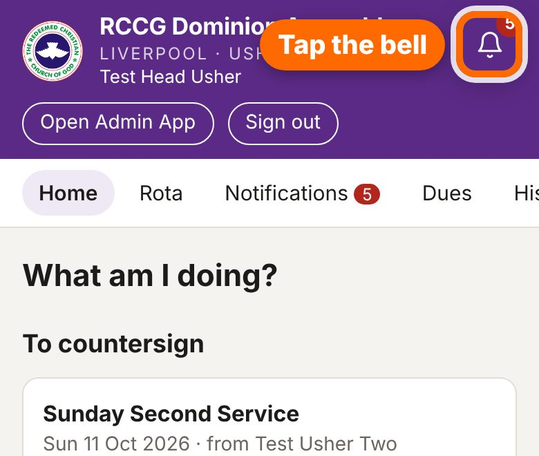
After each Sunday
Checking that everything came in.
6After each Sunday
Open the Admin App
Your Head Usher tools are in the Admin App. Tap Open Admin App at the top. You do not need to sign in again.
How to tell where you are: the Admin App is green, the Ushers App is purple.
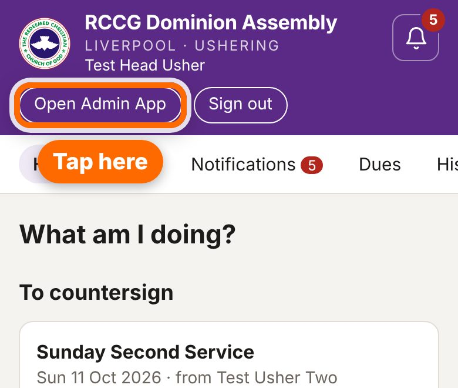
7After each Sunday
See last Sunday at a glance
The Dashboard opens first. It shows how many reports came in, what is still waiting, attendance and the offering.
If you see Review approvals, someone needs your answer. Tap it.
Tip: further down you can see next Sunday's rota, with an Edit rota button.
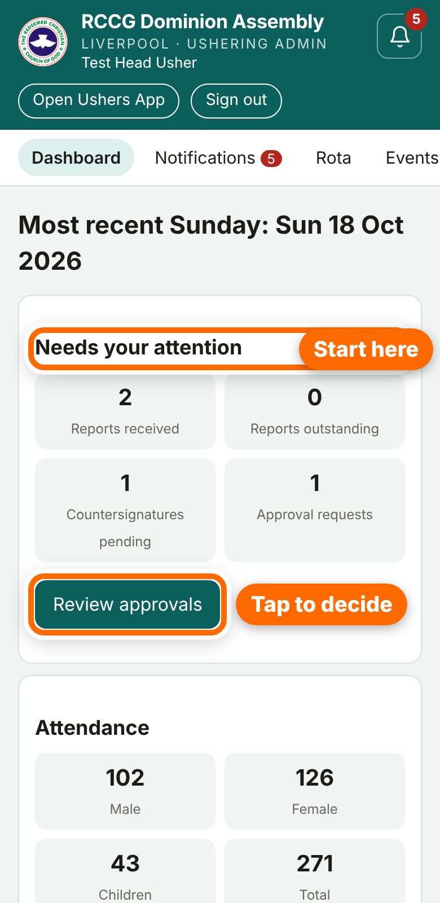
8After each Sunday
Say yes or no to a request
Requests come to Approvals. For example: an usher who cannot make their duty, an usher who needs to correct a report, someone who says they did another usher's duty, or a report sent to a checker who needs your OK.
If you know who will cover, choose them.
Type your PIN.
Tap Approve, or Reject if the answer is no.
The usher is told your answer straight away.
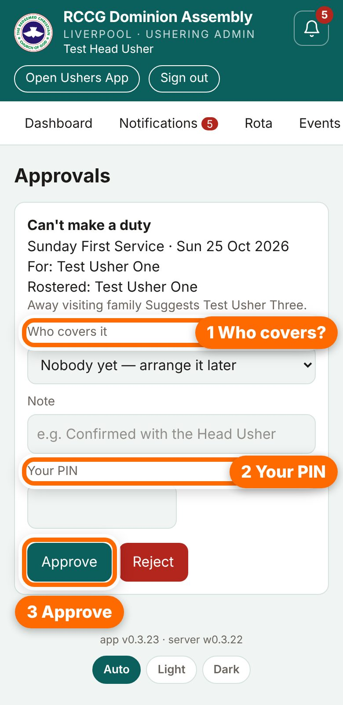
9After each Sunday
Find cover later
If you said yes to "Can't make a duty" but did not know who would cover, the duty waits under Cover still to arrange in Approvals.
When you have found someone, choose them in Who covers it.
Type your PIN.
Tap Save the cover.
Both ushers are told.
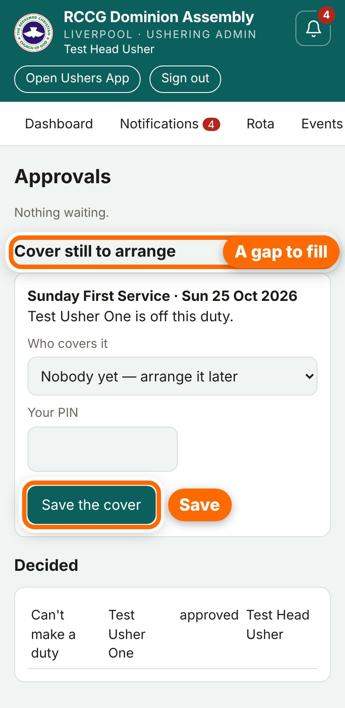
10After each Sunday
Check and countersign a report
When an usher asks you to check their report, it waits on your Home page in the purple Ushers App.
Tap Review and countersign.
Read the report.
Tick the box, type your full name and your PIN.
Countersigning simply means: "I have checked this report and it is true."
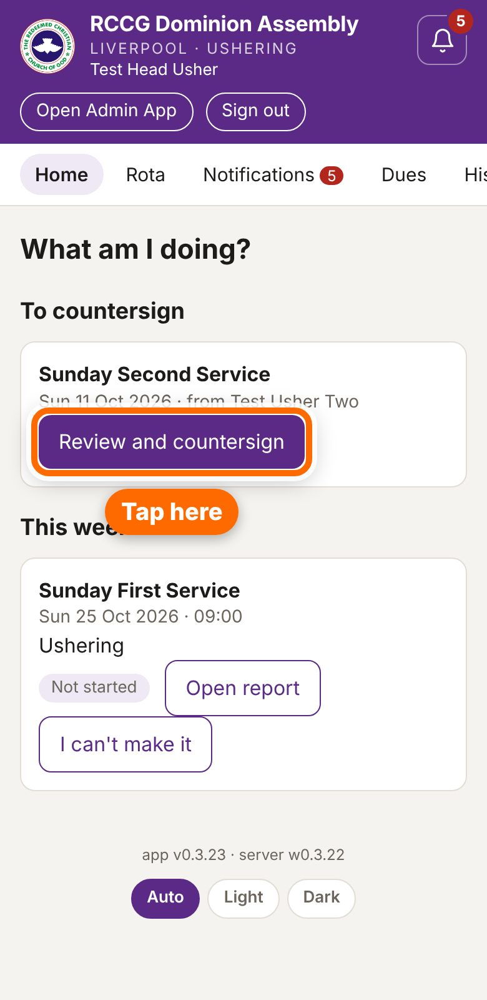
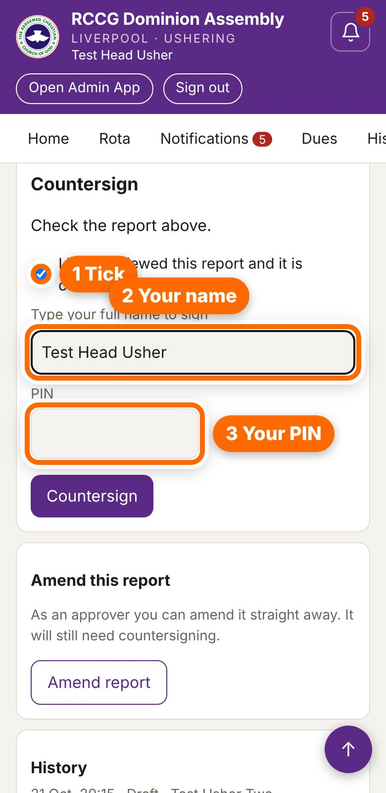
11After each Sunday
Fill in a report yourself
When you are on duty yourself, your service shows on Home in the purple Ushers App.
Tap Open report.
Type the numbers of men, women and children. The total adds up by itself.
Fill in the minister, sermon and the rest as far as you can.
Good to know: the app keeps what you type as you go, so you can stop and come back to it.
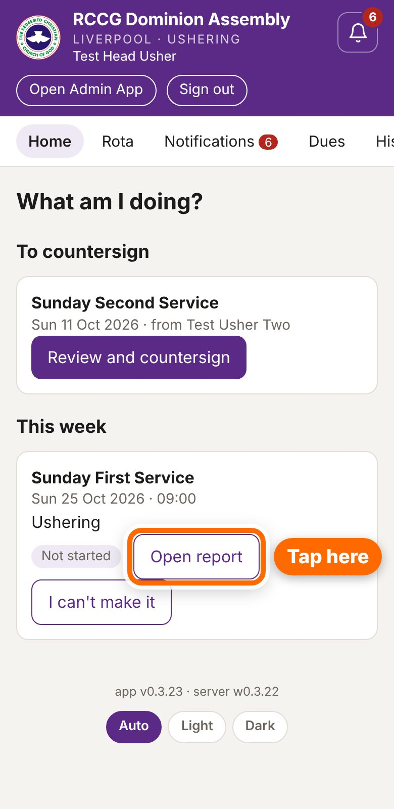
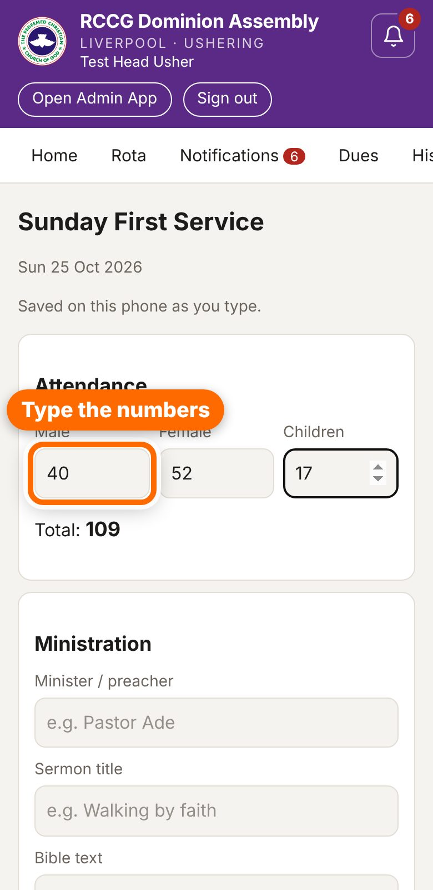
12After each Sunday
Add the offering and sign
For each kind of offering, choose the kind, the note or coin, and how many. Tap Add line.
Choose who will check (countersign) it.
Type your full name, tick the box, and type your PIN.
It sends by itself after the fourth number of your PIN.
No signal in church? It is saved on your phone and sent as soon as you have a signal.
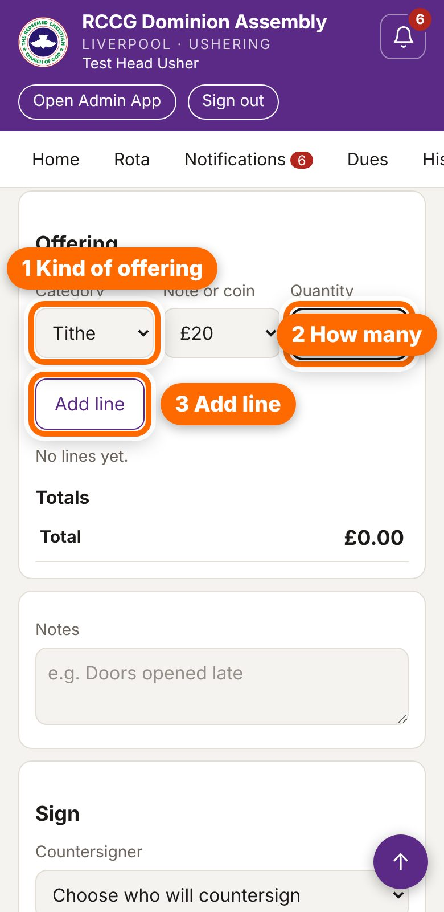
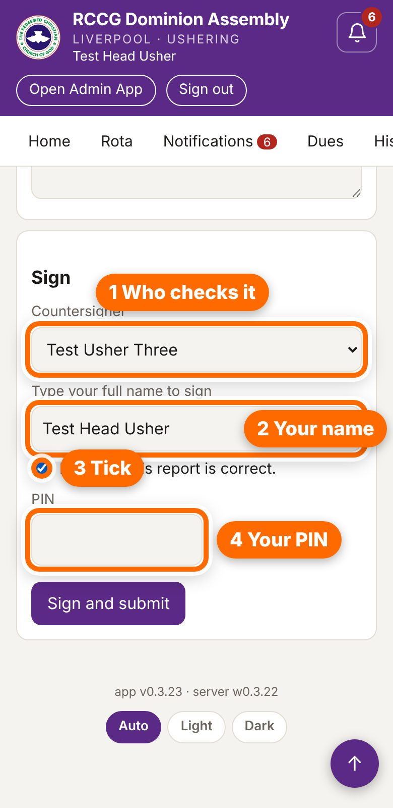
13After each Sunday
Correct a report
A report is never rubbed out, but it can be corrected. Open the report, scroll down and tap Amend report.
Say why it needs correcting.
Change what was wrong.
Sign it again with your name and PIN.
As Head Usher you can correct it straight away. The old version is kept, and the new one is checked (countersigned) again.
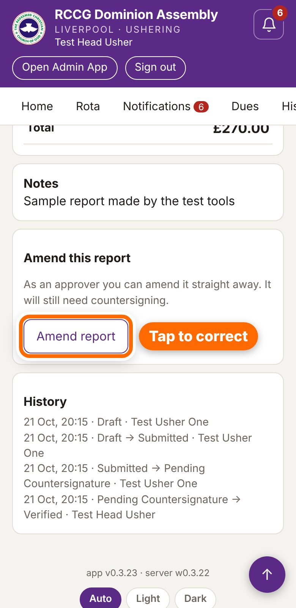
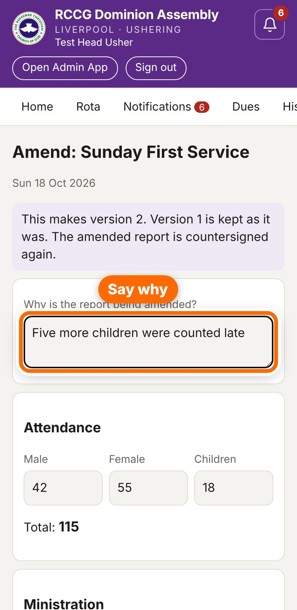
14After each Sunday
Read and print reports
Every report is kept in Reports in the Admin App.
Tap a service to read it.
Tap PDF to save or print it.
For a month at a time, choose the dates and tap Make PDF summary.
Good to know: you are sent a summary at the end of every month anyway.
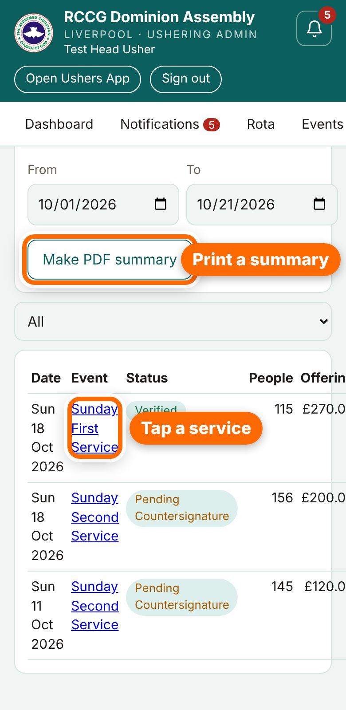
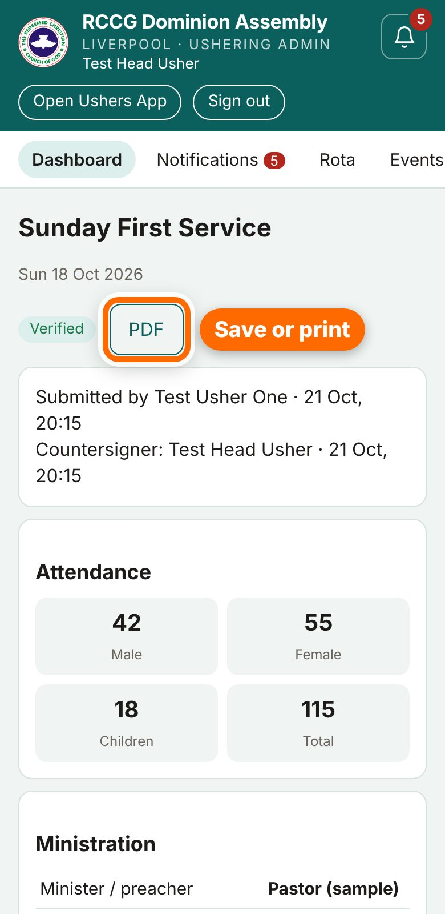
Planning ahead
Rotas, events and messages.
15Planning ahead
Make the Sunday rota
Tap Rota, then use the Week arrows to find the Sunday.
Tick the names for First Service, then tap Save.
Do the same for Second Service.
Everyone you add is told straight away, and reminded two days before. Anyone you take off is told too.
Second Service needs exactly 2 offering counters.
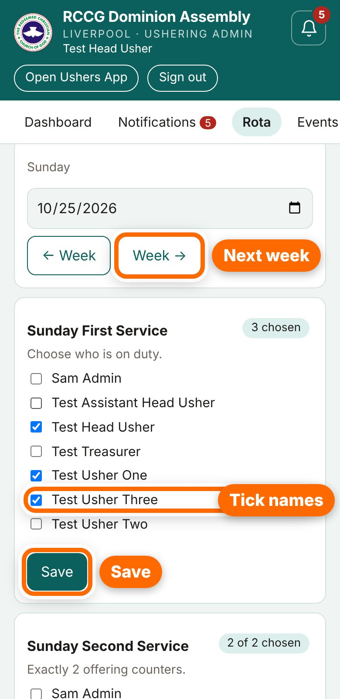
16Planning ahead
See the whole rota
In the purple Ushers App, tap Rota to see who is on duty for the next eight weeks. Your own name is marked (you).
Good to know: the first Sunday of each month is marked Thanksgiving Sunday.
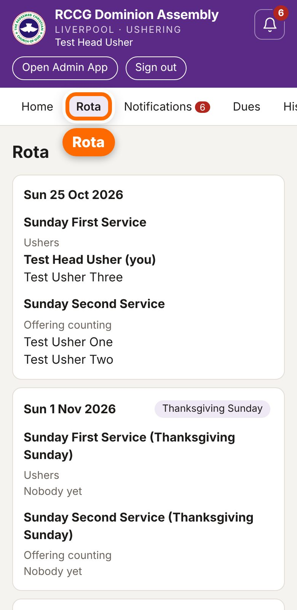
17Planning ahead
Add a special event
For anything that is not a Sunday service, such as a naming ceremony or a prayer meeting.
Tap Events and choose what kind of event it is.
Pick the date and time.
Tap Create.
It then shows under Coming up, where you choose who is on duty.
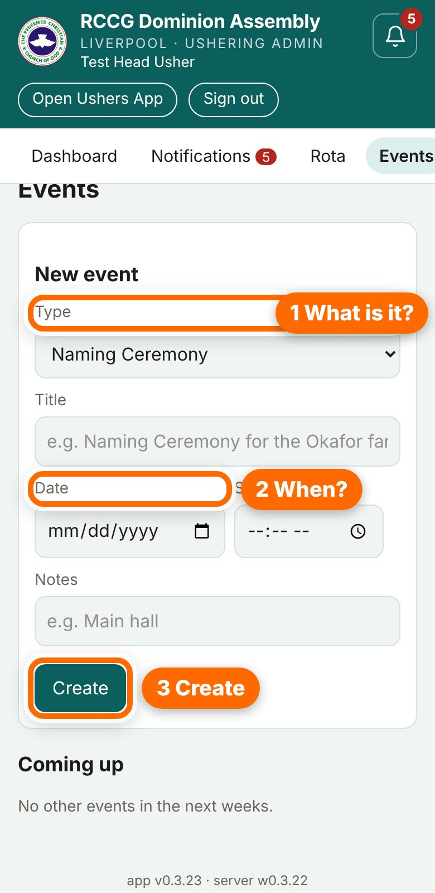
18Planning ahead
Cancel an event
If an event is not happening, find it under Coming up in Events and tap Cancel event.
Everyone on duty for it is told. If it goes ahead after all, tap Restore and they are told it is back on.
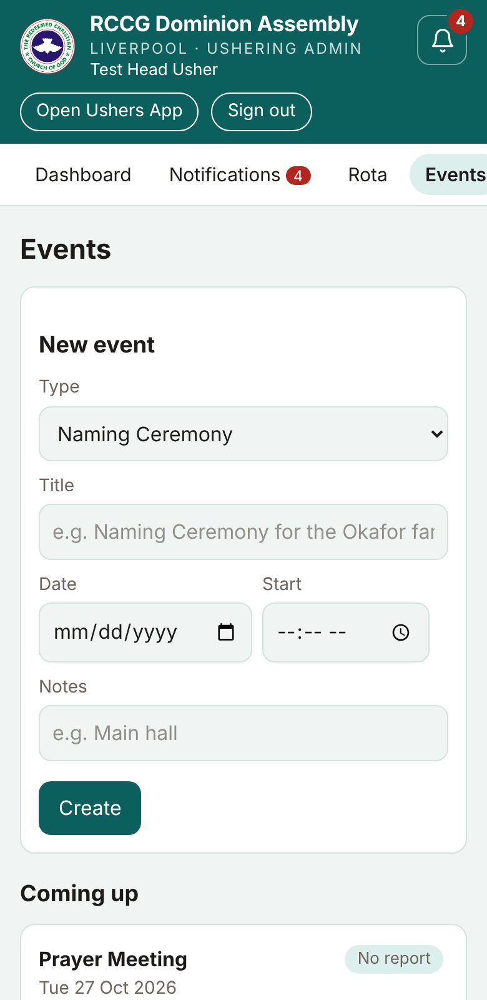
19Planning ahead
Who is in charge today
Every usher's Home page says who is in charge today. It is you, unless you change it.
On the Dashboard, find In charge today and tap Change.
Choose a name.
Tap Today only, or Until changed back.
Good to know: "Today only" goes back to you by itself after midnight.
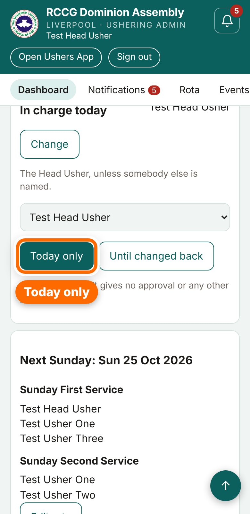
20Planning ahead
Send a message to the ushers
Tap Message. Write a short title and your message.
Choose who it goes to: everybody, this Sunday's ushers, the counters, or people you pick.
Tap Send.
It reaches their app, phone and email. You can also choose to send it later, or keep it on everyone's Home page until a date.
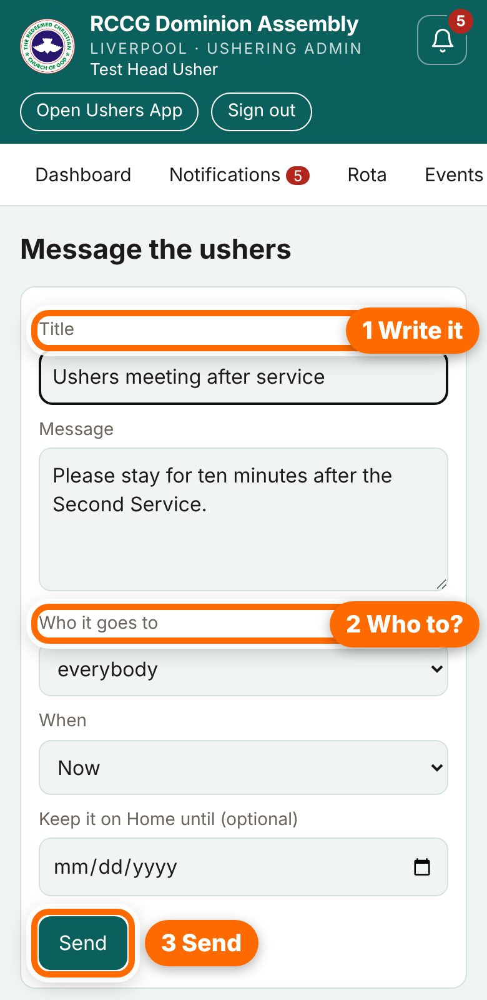
21Planning ahead
See who has read your message
Under Sent and waiting, each message shows how many people have read it.
Tap Remind the ones who have not read it to nudge only those people.
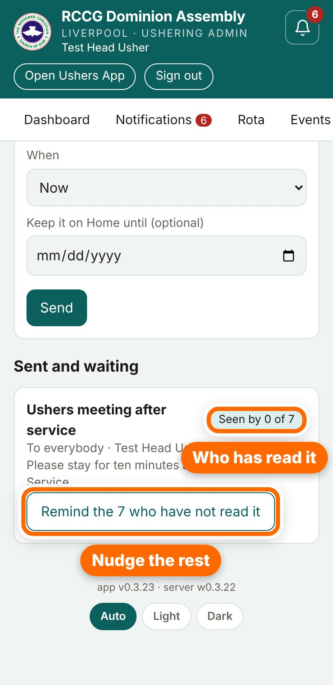
22Planning ahead
If you can't make your own duty
On Home in the purple Ushers App, tap I can't make it under the duty.
Say why.
Tap Send.
Because you are the Head Usher, it is agreed straight away. Then find cover in Approvals, as on the "Find cover later" page.
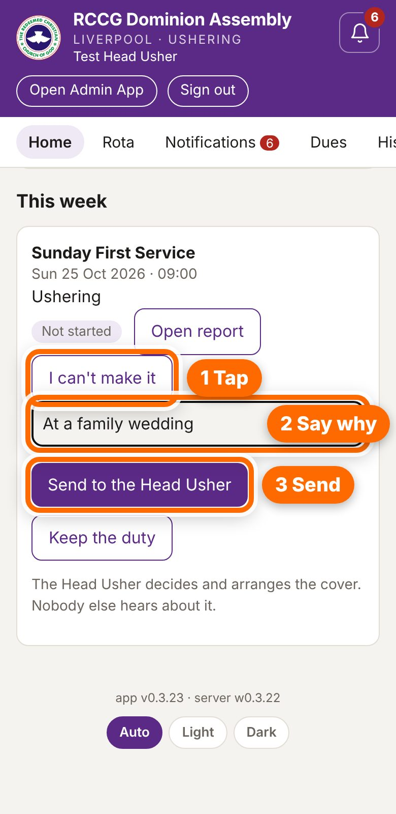
Your ushers
Adding people, getting them set up, and roles.
23Your ushers
Add a new usher
Tap Ushers.
Under Add an usher, type their name, email and phone number.
Tap Add.
They sign in with their name and a starting PIN, and are asked whether to keep it.
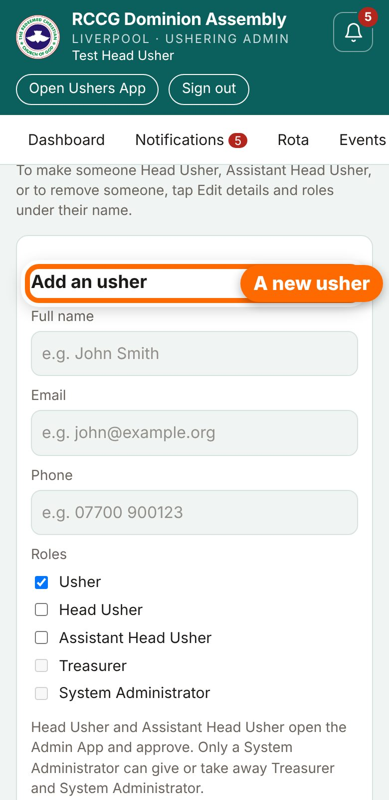
24Your ushers
Help your ushers get the app
At the top of Ushers you can see how many have put the app on their phone.
Send install steps to all sends the steps to everyone who has not done it yet.
Under one person, Send install steps sends it to just them.
Not installed and Alerts off show who may be missing messages.
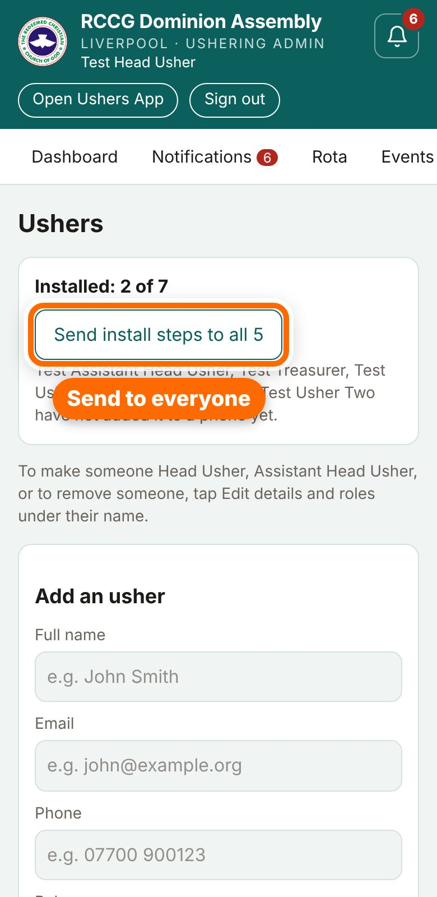
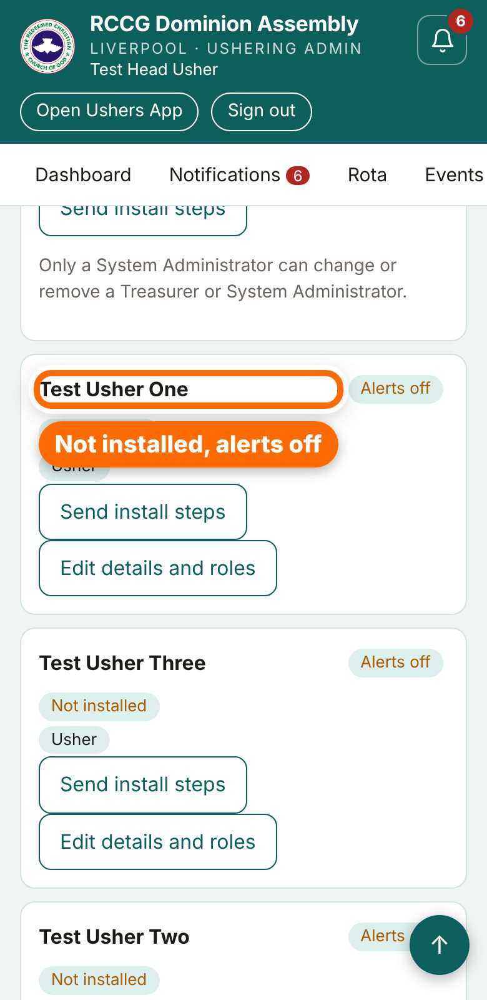
25Your ushers
Give a role, or reset a PIN
In Ushers, tap Edit details and roles under their name.
Tick Head Usher or Assistant Head Usher, or change their phone or email.
Tap Save.
If someone forgets their PIN, tap Reset PIN on the same screen.
Treasurer and System Administrator are given by Asim, so those boxes are greyed out for you.
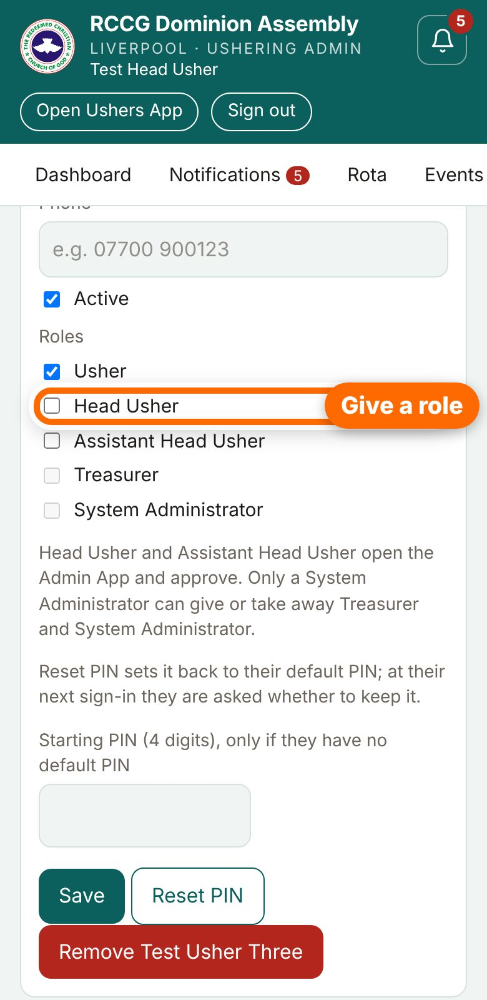
26Your ushers
Remove someone
If someone leaves the department, open Edit details and roles under their name and tap Remove at the bottom.
They can no longer sign in and come off any duties to come. Their past reports stay on the record. To bring them back, tick Active on the same screen and tap Save.
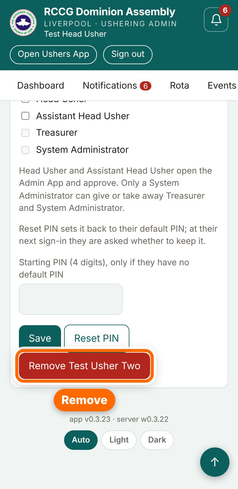
Looking after your account
27Looking after your account
Your notifications
Everything the app has told you is kept in Notifications: reports filed, requests waiting, monthly summaries.
Tap Open on any of them to go straight to it. If you have not turned alerts on yet, tap Turn on alerts here once.
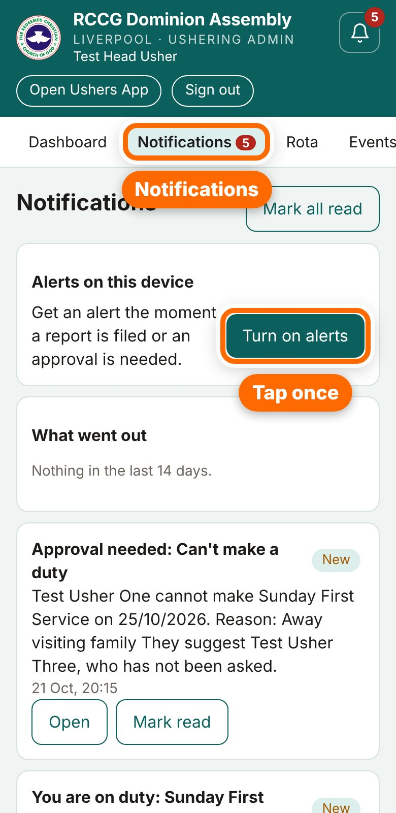
28Looking after your account
Change your PIN
In the purple Ushers App, tap PIN at the end of the row of tabs.
Type your old PIN, then your new PIN twice.
Tap Change PIN.
Tip: slide the row of tabs to the left if you cannot see PIN.
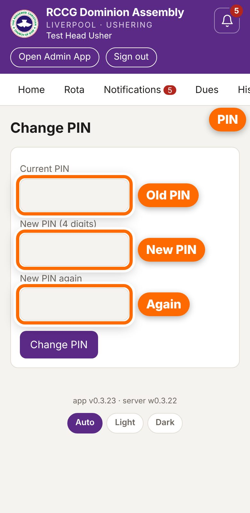
29Looking after your account
Sign out
Tap Sign out if anyone else uses your phone. Next time, just sign in with your name and PIN.
Open Ushers App takes you back to the purple app.
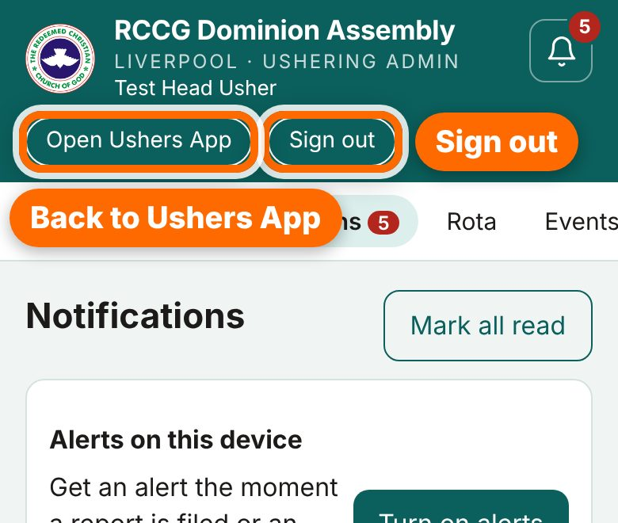
Good to know
The purple app also has Dues (your own department dues), History (your past duties and reports) and Notifications.
At the bottom of every screen, Light and Dark change the colours if one is easier on your eyes.
Ushers are reminded of their duty two days before, and on the day if their report is not in yet, so you do not have to chase them.
Dues and money are looked after by the Treasurer. Settings are looked after by Asim.
The Assistant Head Usher can do everything in this guide too, so you can share the load.
If something looks wrong or a button does not do what you expect, ask Asim.
The pictures use made-up practice names ("Test Head Usher", "Test Usher One"). On your phone you will see your own name and your ushers.